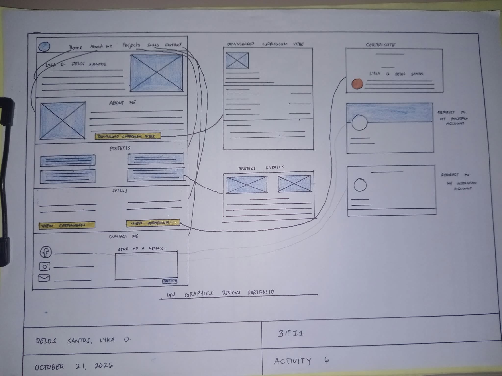

← Back to Projects
← Back to Projects
← Back to Projects
← Back to Projects
ACTIVITY 6
A personal portfolio website wireframe designed to organize and showcase my creative journey, graphic design projects, skills, and achievements.
This project involves designing a personal graphics design portfolio website that showcases my creative works, skills, achievements, and personal background. The website is planned to provide an organized and accessible platform where visitors can explore my design projects, view certificates, learn about my skills, and connect with me.
This is my initial sketch before transforming it into digital art.

The first stage of the project, where I planned the composition, layout, and overall appearance of my design.
For this activity, I created a website wireframe to plan the structure and arrangement of my personal portfolio. The layout includes sections such as Home, About Me, Projects, Skills, and Contact Me. It also features separate pages for project details, downloadable curriculum vitae, and certificates. The design focuses on creating a user-friendly interface with organized content and accessible navigation. This wireframe serves as the foundation for developing my actual portfolio website.